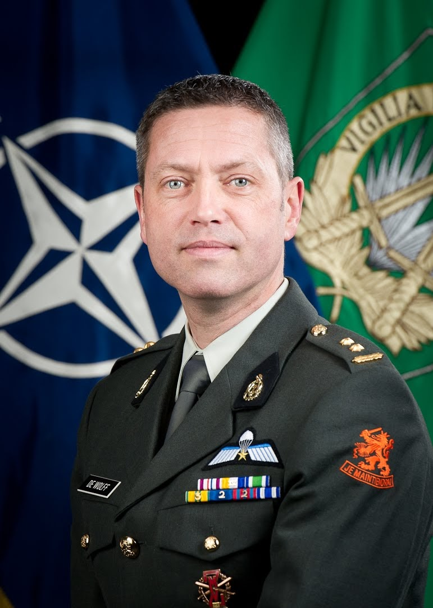

Curriculum Vitae LtCol (RNLA) de Wolff, B.J.

Introductie
My last assignments were in the international environment, be it in various disciplines, and this is actually where my heart lies. The “Joint” in combination with all the different international points of view makes working there a challenge while at the same time being highly rewarding. For this reason I would like to continue working in the international environment, preferably in operational or strategic HQs.